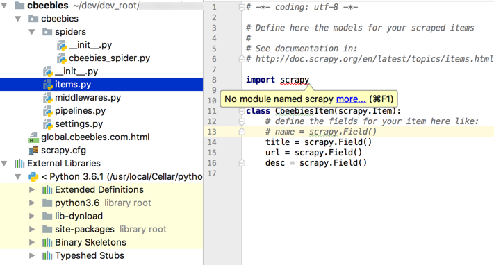
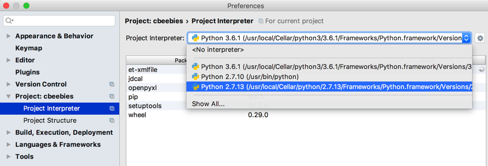
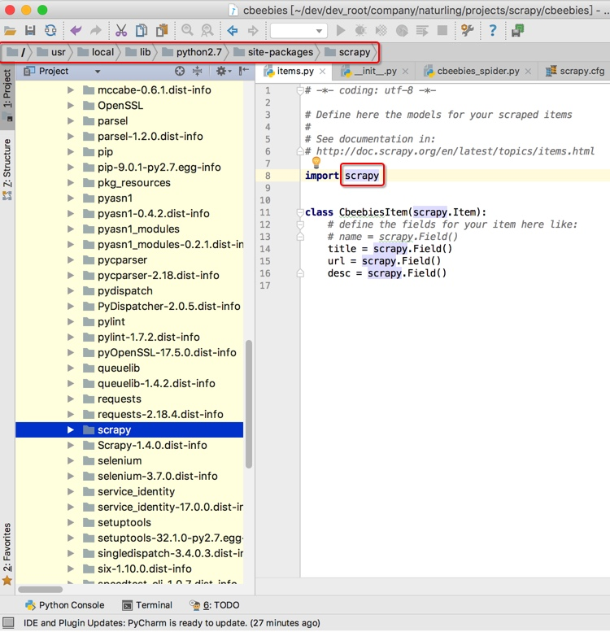
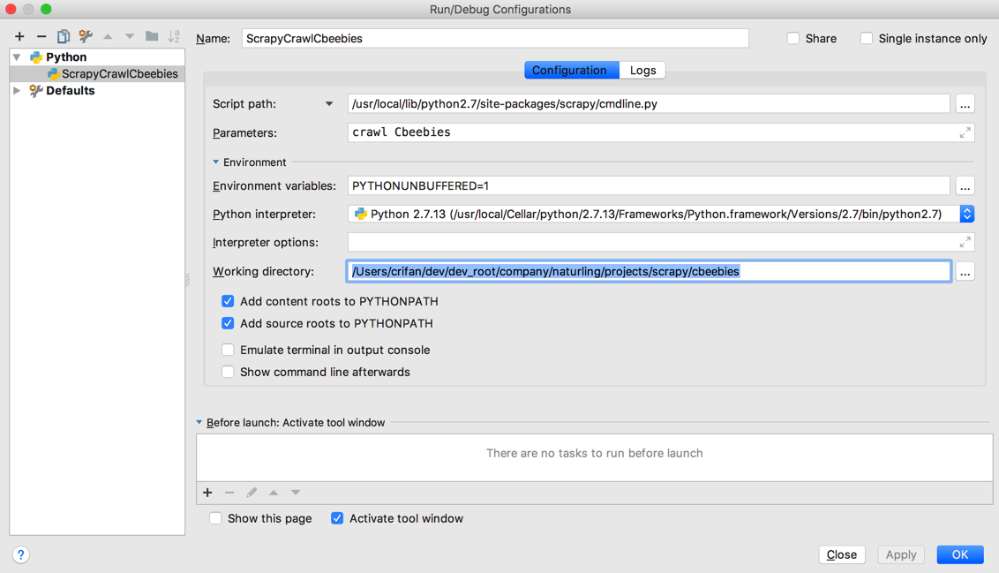

PyCharm调试Scrapy
此处整理用PyCharm调试Scrapy的一些心得。
No module named scrapy
- 问题：已安装Scrapy，但是PyCharm中找不到而报错
No module named scrapy

- 原因：Python版本=Python解释器 设置不正确
- 解决办法：设置正确的当前所使用的Python版本
设置->Project：xxx -> Project Interpreter-> 换成你希望使用的Python版本

即可正常导入scrapy，以及看到对应源码：

如何用PyCharm调试Scrapy
- 原理：
- 背景：scrapy中有个
cmdline.py是用于命令行运行Scrapy的。- 而PyCharm调试Scrapy，其实就是基于命令行方式去启动Scrapy
- 所以就是去启动
cmdline.py并去加上合适参数即可
- 所以就是去启动
- 而PyCharm调试Scrapy，其实就是基于命令行方式去启动Scrapy
- 背景：scrapy中有个
步骤：新建
Python的Debug Configurations，加上参数：Script path:/{PYTHON_ROOT}/site-packages/scrapy/cmdline.py- 举例：
/usr/local/lib/python2.7/site-packages/scrapy/cmdline.py
- 举例：
Parameter：你要调试的Scrapy项目- 举例：
crawl Cbeebies
- 举例：
Working directory：你的Scrapy爬虫所在根目录- 举例：
/User/crifan/dev/dev_root/xxx/projects/scrapy/cbeebies
- 举例：

然后启动调试，即可实时调试了：